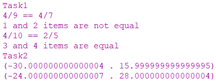

Задача 9.1
Створити список з парною кількістю елементів, які є різними раціональними числами у вигляді дробив. Для кожної пари елементів списку вивести повідомлення про їх рівність або нерівність. Для розв’язання задачі привести усі дроби до спільного знаменника. Надрукувати список після приведення елементів до спільного знаменника.
Задача 9.2
Створити список з парною кількістю елементів, які є комплексними числами в алгебраїчній формі a + ib. Створити новий список, елементами яких є добутки кожної пари комплексних чисел першого списку. Надрукувати новий список.
Код програми
#lang racket
;===========Task1==============
(display "Task1")
(define (numer x) (car x))
(define (denom x) (cdr x))
(define (make-rat n d) (cons n d))
(define(print-rat x)
(display (numer x))
(display "/")
(display (denom x)))
(define (equal-rat? x y)
(print-rat x)
(display " == ")
(print-rat y)
(newline)
(= (* (numer x) (denom y))
(* (numer y) (denom x))))
(define (display-all . vs)
(for-each display vs))
(define compare-list (list (make-rat 4 9) (make-rat 4 7) (make-rat 4 10) (make-rat 2 5)))
(define (compare l i)
(newline)
(if (>= (+ i 1) (length l))
(display "")
(if (equal-rat? (list-ref l i) (list-ref l (+ i 1)))
(display-all (+ i 1) " and " (+ i 2) " items are equal")
(display-all (+ i 1) " and " (+ i 2) " items are not equal")))
(if (>= (+ i 1) (length l))
(display "")
(compare l (+ i 2)))
)
(compare compare-list 0)
;============Task2=============
(display "Task2")
(define (Myreal-part z) (car z))
(define (Myimag-part z) (cdr z))
(define (square x)
(* x x))
(define (magnitude1 z)
(sqrt (+ (square (Myreal-part z)) (square (Myimag-part z)))))
(define (angle1 z)
(atan (Myimag-part z) (Myreal-part z)))
(define (make-from-real-imag x y)
(cons x y))
(define (make-from-mag-ang r a)
(cons (* r (cos a)) (* r (sin a))))
(define (mul-complex z1 z2)
(make-from-mag-ang (* (magnitude1 z1) (magnitude1 z2))
(+ (angle1 z1) (angle1 z2))))
(define imag-list (list (make-from-real-imag 1 4) (make-from-real-imag 2 8) (make-from-real-imag 3 5) (make-from-real-imag 2 6)))
(define (mult-imag l i)
(newline)
(if (>= (+ i 1) (length l))
(display "")
(display (mul-complex (list-ref l i) (list-ref l (+ i 1)))))
(if (>= (+ i 1) (length l))
(display "")
(mult-imag l (+ i 2)))
)
(mult-imag imag-list 0)
Результати роботи програми
Github link
Висновок
Після проведеної роботи було реалізовано дві програми. Одна порівнює список раціональних дробів по-парно на рівність. Друга програма обчислює добутків комплексних чисел попарно.